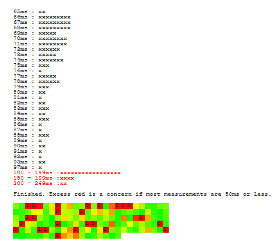

Hallo!
ich bin vor kurzem von meinem upc 250/30 Tarif auf den Gaming 300/50 Tarif umgestiegen um besseren Ping in Games zu haben. Die volle Geschwindigkeit erhalte ich eigentlich immer, am Ping hab ich keine sonderliche Verbesserung bemerkt. Liegt immer so zwischen 45 und 65 und ist ok. Ich hatte davor nie Probleme beim online Gaming aber mit dem neuen Gaming Tarif habe ich dauernd Paket Loss wenn ich in einer Party mit Engländern spiele. Spiele ich Solo funktioniert alles prima bis auf ganz wenig Paket loss alle 60 Sekunden. Das trübt den Spielspaß ziemlich, zumal dieser Tarif das Gaming angenehmer machen soll. Ich spiele über WLAN. Aber das habe ich mit dem alten Tarif auch und es funktionierte alles. Kann mir da jemand weiterhelfen ?
Christian_E
Hast du mal den Test über Kabel probiert?
Passiert der Verlust nur mit Freunden aus England oder hast du das mit anderen Ländern auch?
Maci
Könnte nur mit power lan probieren aber das funktioniert zurzeit nicht da der Ping über power Lan über 100 ist weil am Mehrfachstecker noch ein Mehrfachstecker hängt wegen der ganzen Weihnachtsbeleuchtung. Werde es aber testen wenn es soweit ist. Bis jetzt hab ich das Problem nur mit diesen Freunden aus England. Könnte dieses Problem mit ipv6/ipv4 zu tun haben? Habe im Internet gelesen das ipv6 zu Paket Verlust bei online Gaming führen kann. Manche haben auch berichtet das nach zurückstellen auf ipv4 kein Paket Verlust mehr passiert ist. Ich kenn mich auf diesen Gebiet nicht sonderlich gut aus und weiß nicht mal ob ich ipv4 oder ipv6 habe und was das überhaupt ist
Rexalius2000
Am 20.12.2020 um 16:18 schrieb Maci:
volle Geschwindigkeit erhalte ich eigentlich immer, am Ping hab ich keine sonderliche Verbesserung bemerkt. Liegt immer so zwischen 45
CMD und gib folgendes ein:
ping orf.at -n 30
Das pingt 30 mal lang 1 mal die Sekunde den ORF Server in Wien an. Poste davon bitte einen Screenshot .
Maci
vor 7 Stunden schrieb Rexalius2000:
CMD und gib folgendes ein:
ping orf.at -n 30
Das pingt 30 mal lang 1 mal die Sekunde den ORF Server in Wien an. Poste davon bitte einen Screenshot .
Schaut nicht schlecht aus (Ping zwischen 16 und 31 ms) Liegt wohl am gegenüberliegenden Server.
Maci
vor 27 Minuten schrieb Rexalius2000:
Schaut nicht schlecht aus (Ping zwischen 16 und 31 ms) Liegt wohl am gegenüberliegenden Server.
Ja ich hab so auch überhaupt keine Probleme. Trotzdem komisch das ich Paket Verlust habe wenn ich mit Leuten aus England in einer Party spiele seit dem Tarif Wechsel 🤔
Rexalius2000
Sind Drittnutzer im Heimnetz? Wenn ja, versuche mal alle zu trennen.
Christian_E
Das kann aber auch an der Verbindung nach England liegen.
Wenn du sonst keine Probleme hast, glaub ich nicht, dass du da viel machen kannst von deiner Seite aus.
nordx
Endlich eine Möglichkeit mich auszutauschen...
Ich hab gesamt schon 2-3h mit der Hotline telefoniert um das Problem zu beheben... die Aussage von der Technik: Tauschen sie das Lankabel, Modem resetten, etc pp. Die Standarddinge.
Ich habe wie der Threadersteller von einem anderen Tarif (Speed 300 - 300/30Mbit) auf den Gaming 300 (300/50Mbit) gewechselt und auch eine neue Modembox (Connectbox 2) bekommen.
Seit dem Wechsel habe ich immer wieder (und vorallem Abends) übelste Pingaussetzer.
Ich habe nun den Ping auf 1.1.1.1 für 30 min bei einem alten UPC anschluss (bei dem ich auf einem Laptop den ping ausgeführt habe der über 5 Zwischen Router und Wlan verbunden ist) und bei meinem aktuellen Anschluss (Stand-PC mit Lankabelanschluss) gleichzeitig laufen lassen.
Bei diesem Problem 30 Pings laufen zu lassen ist hier nicht wirklich aussagekräftig (da die Fehlerrate Tagesabhängig ist). Die technische Hotline hat während dem Gespräch auch mehrmals die Leitung und das Signal getestet. Es war in Ordnung (aus Magenta-Sicht). Ich habe bei mir aber während des Gesprächs ständig Pingaussetzer gehabt. Das heißt die Pakete werden offensichtlich komplett verworfen.
Ich habe bei der Kündungshotline nun erreicht, dass man mir den Tarif gratis nochmals auf gigakraft 250 umwandelt. Ursprünglich habe ich die Technikhotline gebeten mir den Tarif testweise für eine Woche auf den schlechteren gigakraftarif umzustellen, da ich schon vermute das es am "Gaming-Tarif"-Routing liegt und wohl irgendwo bei magenta ein Technisches Problem vorliegt.
So kann man jedenfalls nicht zocken, ständiges geruckel, gerade Abends wo man am ehesten mal eine Runde spielt.
Ich werde Bescheid geben sobald mein Tarif umgestellt wurde, das passiert eigentlich bevor ich das neue Modem erhalte. Bin schon gespannt wie dann der Ping (mit selben Modem, bzw unveränderter Hardwareaufbau) ist.
So ist der Tarif nicht nutzbar, zumindest nicht für den Einsatzweck, für den er eigentlich vorgesehen ist.
Leider gibts bei der Technik-Hotline keinen höheren Technik-Support mehr (wie bei UPC) und man wird da nur mit "da können wir leider nix machen", abgespeist.
Mir wurde ein Kostenpflichtiger Wechsel auf das gigakraft 250 angeboten...
Wäre schön wenn man durch Findung des Fehlers ein Zuckerl bei Magenta kriegen würde,... aber mir würde schon reichen wenn der Tarif einfach wieder so wie vorher funktioniert (Lossfree).
Anbei das Ergebnis meiner Pings (links alter UPC Tarif, rechts neuer Tarif - zur selben Zeit ausgeführt).
Ein loss von 19 Paketen von 2500 ist eigentlich verkraftbar
nordx
Gerade eben schrieb IT-Freak:
Ein loss von 19 Paketen von 2500 ist eigentlich verkraftbar
Was soll diese Antwort? Nein, ist es nicht! Vorallem dann nicht wenn man Probleme mit dem Internet hat und für einen "Gamingtarif" bezahlt.
Abends kommt manchmal jeder 10. Ping nicht an. Was soll daran gut sein?
Bitte das Problem nicht einfach runterspielen.
Ich bin seit 10 Jahren mit meinem Haushalt bei UPC und hatte nie solche Probleme. Seit dem Wechsel auf diesen neuen Gamingtarif habe ich genannte Aussetzer, die sich Abends vermehrt häufen und das Internet als Gaminginternet somit unbrauchbar machen.
Fürs normale Youtube surfen und Websiten ansurfen wirds wohl reichen. Aber da brauch ich dann auch auf keinen Fall einen Gaminganschluss (30mbit wären hier ausreichend).
Es wäre sehr nett wenn sich ein technisch versierter Arbeiter bei Magenta das Problem mal wirklich genauer ansehen könnte. Es scheint wohl als wäre nicht nur ich betroffen.
Das es nicht jedem gleich auffällt ist klar (das setzt eine gewisse Feinfühligkeit vorraus und vorallem Motivation sich der Sache anzunehmen...).
"Das Internet funktioniert", ja. Irgendwas kommt schon an...
Christian_E
Also ich hab mir das mal bei meinem 4G Home Anschluss getestet.
Dieser hat aktuell beim Speedtest einen Ping von 18 bis 24ms.
Beim Ping (500 Tests) auf 1.1.1.1 hatte ich: 0 verlorene Pakete
Beim Ping (500 Tests) auf orf.at hatte ich: 1 verlorenes Paket
Ich kann mir vorstellen, dass aktuell aufgrund der hoffnungslos überlasteten Netze wegen Jahreszeit/LockDown einfach die infrastruktur überlastet ist und das kann man im Moment nicht mir früheren Zeiten vergleichen. Eine derartige Situation hat es eben noch nie gegeben.
Und da stellt auch der Gaming Tarif keine Ausnahme da, denn wir kann man den behandeln, dass er von der Pandemie und der Überlastung der Netze nichts mitbekommen sollte.
Technisch wird es schwierig, denn ich gehe davon aus, dass bei dir alles passt - die Ursache sehe ich einfach beim Gleichzeitigkeitsfaktor der Zugriffe durch uns alle. Und da macht es das Pinge und die vielen Speedtests auch nicht einfacher.
LG
Christian
IT-Freak
Bei einem Ping Loss von über einem Prozent können wir reden.
Das Problem bei dem Gaming Tarif könnte sein, dass bei Docsis 3.1 Kanäle in einem höheren Frequenzbereich genutzt wird, was dann anfälliger für Probleme ist, dafür gibt es bei diesem Modem nicht das Problem mit dem Puma6 Bug, weil ein Puma 7 Chip verbaut ist. (Mit dem Puma7 Bug, welcher aber je nach dem mit wem man redet nicht so schlimm ist wie der Puma 6 Bug)
nordx
vor 47 Minuten schrieb Christian_E:
Also ich hab mir das mal bei meinem 4G Home Anschluss getestet.
Dieser hat aktuell beim Speedtest einen Ping von 18 bis 24ms.
Beim Ping (500 Tests) auf 1.1.1.1 hatte ich: 0 verlorene Pakete
Beim Ping (500 Tests) auf orf.at hatte ich: 1 verlorenes Paket
Ich kann mir vorstellen, dass aktuell aufgrund der hoffnungslos überlasteten Netze wegen Jahreszeit/LockDown einfach die infrastruktur überlastet ist und das kann man im Moment nicht mir früheren Zeiten vergleichen. Eine derartige Situation hat es eben noch nie gegeben.
Und da stellt auch der Gaming Tarif keine Ausnahme da, denn wir kann man den behandeln, dass er von der Pandemie und der Überlastung der Netze nichts mitbekommen sollte.
Technisch wird es schwierig, denn ich gehe davon aus, dass bei dir alles passt - die Ursache sehe ich einfach beim Gleichzeitigkeitsfaktor der Zugriffe durch uns alle. Und da macht es das Pinge und die vielen Speedtests auch nicht einfacher.
LG
Christian
Du verstehst schon das ich heute Vormittag den Test gemachte habe und beide ein UPC/Magenta-Kabelanschluss als Grundlage besitzen.
Der alte Tarif hat 0 Aussetzer (so wie ichs gewohnt war... die letzten gefühlten 20 Jahre), der neue hat sogar jetzt am Vormittag Aussetzer. Diese werden gegen Abend hin schlimmer (häufen sich).
Hier 4G mit Kabel zu vergleichen ist auch nicht Zielführend. Auch ein Vergleich mit vor Corona passt nicht, da wir Corona nicht erst seit 2 Wochen haben, sondern leider schon fast das ganze letzte Jahr. Und da hatte ich mit dem alten Tarif ebenfalls keine Probleme.
Es liegt definitiv nicht an der Corona-Situation. Das ist unlogisch und erschließt sich auch nicht aus meinen Erfahrungen (sie weiter oben).
vor 45 Minuten schrieb IT-Freak:
Bei einem Ping Loss von über einem Prozent können wir reden.
Das Problem bei dem Gaming Tarif könnte sein, dass bei Docsis 3.1 Kanäle in einem höheren Frequenzbereich genutzt wird, was dann anfälliger für Probleme ist, dafür gibt es bei diesem Modem nicht das Problem mit dem Puma6 Bug, weil ein Puma 7 Chip verbaut ist. (Mit dem Puma7 Bug, welcher aber je nach dem mit wem man redet nicht so schlimm ist wie der Puma 6 Bug)
Na sehr gut. Gestern Abend hatte ich nur vom neuen Tarif aus getestet und hatte eine Fehlerrate von 1,6%. Wie schon gesagt ist das schon ein guter Wert. Ich hatte teilweise alle 10 Pings einen Aussetzer, das entspricht 10% ... (Zocken = unmöglich).
Ich könnte mir auch sehr gut vorstellen das es einfach am Modem liegt. Was jetzt Docsis 3.1 und 4 und Puma6 damit zu tun haben ist mir eigentlich ziemlich wurscht. Fakt ist: Es funktioniert so nicht.
Ich ärgere mich gerade das ich das alte Modem bereits zurückgesendet habe... damit bekam ich auch die 300/50 Mbit rein. Warum man hier zum Tauschen gezwungen wird, versteh ich sowieso nicht.
Hätte gerne getestet obs mit dem alten Modem auch zu diesen Pingefehlern kam.
Habe zwischenzeitlich auch den Dämpfungsstecker Zwischen Wanddose und Kabel entfernt und das Modem neugestartet. Damit wars gefühlt plötzlich etwas besser mit den Aussetzern.
Werde es heute Abend nochmals zur Hauptzeit testen (vermutlich wird der Tarif eh erst in 2 Wochen umgestellt, außer ich ruf nochmal bei der Hotline an), also wenn die Pings wieder sehr schlecht sind, ob dann bei Modemneustart Besserung eintritt.
IT-Freak
Montiere das Modem so nähme wie möglich an dem Punkt wo das Kabel in die Wohnung / Haus kommt.
nordx
vor 21 Minuten schrieb IT-Freak:
Montiere das Modem so nähme wie möglich an dem Punkt wo das Kabel in die Wohnung / Haus kommt.
Ist es. Und nun?
Bitte lies nochmals meine vorherigen Antworten und versuche zu verstehen das auch der obige Threadersteller, offensichtlich exakt selbiges Phänomen wie ich beobachten kann.
Ich werde später, Abends, nochmals Ping auf 1.1.1.1 schicken. Von beiden Standorten aus.
Bin gespannt wies dann ist.
Ich kann auch Zeitgleich von 2 weiteren Business-Internetanschlüssen (unterschiedliche Standorte in Wien) aus Pings ausführen.
IT-Freak
Ich kann dir dann nicht helfen.
Ins Netz von Magenta kann ich nicht eingreifen und selbst wenn ich könnte, ich dürfte nicht.
nordx
Gerade eben schrieb IT-Freak:
Ich kann dir dann nicht helfen.
Ins Netz von Magenta kann ich nicht eingreifen und selbst wenn ich könnte, ich dürfte nicht.
Ok, verstehe.
Kannst du einen Techniker bei Magenta erreichen und auf das Thema aufmerksam machen?
IT-Freak
vor 7 Minuten schrieb nordx:
Ok, verstehe.
Kannst du einen Techniker bei Magenta erreichen und auf das Thema aufmerksam machen?
Wieso sollte ich das können?
Ich bin ein ganz normaler User in dem Forum.
Maci
Ich habe immer noch das Problem das ich nur in einer Party mit Engländern Paket loss beobachten kann. Mit anderen Freunden und Solo funktioniert alles zu 90% Prozent würde ich sagen. Hin und wieder bemerke ich Paket loss abends aber nach einem Router Neustart funktioniert es wieder oder nur Zufall. Ärgerlich ist es trotzdem weil dieser Tarif als „Gaming“ Tarif angepriesen wird und Gaming in keinster verbessert, eher im Gegenteil. Oft lese ich von diesem Puma 6 bug aber ich hatte davor 3 Jahre NIE Probleme mit dem ursprünglichen upc Tarif.
nordx
Kleines wichtiges Update:
ich hab nun nochmals bei der Hotline angerufen und eine SEHR kompetente Mitarbeiterin erwischt (die auch schon seit UPC beim Unternehmen dabei ist) und sich technisch gut auskennt!
Es dürfte tatsächlich an diesem Docsis 3.1 vs. 3.0 liegen. Beim Gigakraft Tarif (ohne Gaming) wird anscheinend noch 3.0 verwendet und sollte somit normal funktionieren. Bei 3.1 (Gamingtarif) gibt es bei manchen Leitungen leider technische Probelme und es wird an einer Lösung gearbeitet. Wann und wie das Problem behoben wird, weiß der normalsterbliche leider nicht.
Leider wird mein Tarif heute noch nicht umgestellt. Ich bin aber mittlerweile sehr zuversichtlich das es die Problemlösung ist!
@Maci
Ich gebe dir verlässlich Bescheid sobald es bei mir Neuigkeiten gibt. Dieses Problem ist echt nervig!
nordx
Zwischenupdate:
Die Umstellung wurde
noch nicht
durchgeführt. Habe vor 3 Tagen nochmals angerufen und nochmal um Umstellung gebeten, Antwort: "Ja, wir können Sie jetzt umstellen wenn Sie wollen"...
Jedenfalls haben sich die Pingloss erheblich verbessert, eventuell konnte man technische Probleme ausfindig machen und hat diese behoben.
Ich kann das Internet derzeit vernünftig nutzen, allerdings fehlte mir die Zeit das ausgiebig zu testen.
Lasse ab jetzt auf einem Windows-PC den ganzen Tag den Ping auf 1.1.1.1 (und auf einen Google.at Server) laufen und werde mir dann die Statistik des Pings ansehen. Zurzeit siehts jedenfalls gut aus!
Mal sehen wann Magenta umstellen will, eventuell werde ich das nun doch abbrechen und bei dem Tarif bleiben, falls das denn dann noch geht.
Bei mir scheint es nun wieder zu gehen, bzw. das Problem behoben.
ich habe gesamt 41.000 Pings auf 1.1.1.1 laufen lassen und 0 aussetzer gehabt.
nordx
Gestern wurde mein Tarif umgestellt. Bis dahin gings so einigermaßen mit den Aussetzern.
Von gestern Abend bis jetzt hab ich auf meinem Server wieder den Ping auf 1.1.1.1 und google.at laufen lassen, Aussetzer sind wieder da :-(
490 Aussetzer auf 71200 Pings...
Mal sehen ob ich das "schlechtere" Modem bekomme (vielleicht funktioniert das ja).
Werde am Nachmittag nochmal beim Support anrufen und die Technikerin von damals versuchen zu erreichen.
Echt eine mühsame Geschichte!
Christian_E
Evtl. hat das gar nicht mit dem Tarif und dem Modem zu tun, sondern einfach mit den Gegebenheiten in der Magenta Infrastruktur.
Sprich: Auslastung/Überlastung der Infrastruktur?
Nur mal so als Gedanke, denn dass das mit der Tarifumstellung zu tun hätte ist schon sonderbar.
Maci
Hallo!
ich bin vor kurzem von meinem upc 250/30 Tarif auf den Gaming 300/50 Tarif umgestiegen um besseren Ping in Games zu haben. Die volle Geschwindigkeit erhalte ich eigentlich immer, am Ping hab ich keine sonderliche Verbesserung bemerkt. Liegt immer so zwischen 45 und 65 und ist ok. Ich hatte davor nie Probleme beim online Gaming aber mit dem neuen Gaming Tarif habe ich dauernd Paket Loss wenn ich in einer Party mit Engländern spiele. Spiele ich Solo funktioniert alles prima bis auf ganz wenig Paket loss alle 60 Sekunden. Das trübt den Spielspaß ziemlich, zumal dieser Tarif das Gaming angenehmer machen soll. Ich spiele über WLAN. Aber das habe ich mit dem alten Tarif auch und es funktionierte alles. Kann mir da jemand weiterhelfen ?
nordx
Das neue Modem hat bei mir definitiv Besserung gebracht und sieht so aus wie das alte, welches ich davor hatte.
Bandbreite ist voll da und Pingaussetzer gibts auch quasi keine.
Siehe auch hier meine anderen Antworten:
seldom
Am 1/29/2021 um 15:41 schrieb nordx:
Das neue Modem hat bei mir definitiv Besserung gebracht und sieht so aus wie das alte, welches ich davor hatte.
Bandbreite ist voll da und Pingaussetzer gibts auch quasi keine.
Siehe auch hier meine anderen Antworten:
Meh. Meine letzte Hoffnung mit meiner Connect Box 1, die sich seit Jahren täglich mehrmals aufhängt, war eigentlich die Connectbox 2 zu testen. Jetzt macht die bei anderen auch solche Zicken.
nordx
Am 21.2.2021 um 02:29 schrieb seldom:
Meh. Meine letzte Hoffnung mit meiner Connect Box 1, die sich seit Jahren täglich mehrmals aufhängt, war eigentlich die Connectbox 2 zu testen. Jetzt macht die bei anderen auch solche Zicken.
Connect Box 1 austauschen lassen, schon probiert?
Ein defekt bei einem Gerät kann immer mal vorkommen. Die Connect Box 1 funktioniert bei mir seit Jahren Problemlos (ohne Aufhänger).
Allerdings nutze ich sie im Bridge-Modus (das heißt: nur als reines Modem. Ein Router dahinter macht den Rest)
LG
Maxx
Am 22.6.2021 um 13:09 schrieb nordx:
Connect Box 1 austauschen lassen, schon probiert?
Ein defekt bei einem Gerät kann immer mal vorkommen. Die Connect Box 1 funktioniert bei mir seit Jahren Problemlos (ohne Aufhänger).
Allerdings nutze ich sie im Bridge-Modus (das heißt: nur als reines Modem. Ein Router dahinter macht den Rest)
LG
Eine Connect Box 1 ohne Lag-spikes und Packetloss - sprich Puma-Bug ? Das gibt es definitiv nicht !
Auch auf deinem Kabelmodem, lässt sich das Problem 100 % reproduzieren.
Die Messung ist das eine, das Subjektive empfinden das andere. Subjektiv bekomme ich von den Fehlern nichts mit. Also scheinen die Protokolle das gut auszuhalten. Ich habe bei Datenübertragungen von und ins Internet keine Probleme. Beim Zocken gibts auch keine Laggs, zumindest nicht so das es auffallen würde.
Wie fällt dir ein PUMA6-Bug auf?
Nur durch den oben genannten Test?
Habe eben nebenbei den Test laufen lassen. Ich weiß nicht was man daraus nun lesen will :-D.

Maxx
vor einer Stunde schrieb nordx:
Die Messung ist das eine, das Subjektive empfinden das andere. Subjektiv bekomme ich von den Fehlern nichts mit. Also scheinen die Protokolle das gut auszuhalten. Ich habe bei Datenübertragungen von und ins Internet keine Probleme. Beim Zocken gibts auch keine Laggs, zumindest nicht so das es auffallen würde.
Wie fällt dir ein PUMA6-Bug auf?
Nur durch den oben genannten Test?
Habe eben nebenbei den Test laufen lassen. Ich weiß nicht was man daraus nun lesen will :-D.
Die roten Felder sagen aus, dass auch dein Modem, bei der Verarbeitung von Daten-Paketen, Latenzspitzen generiert (siehe 200 - 249ms). Somit für Online-Gaming unbrauchbar.
nordx
vor 20 Stunden schrieb Maxx:
Die roten Felder sagen aus, dass auch dein Modem, bei der Verarbeitung von Daten-Paketen, Latenzspitzen generiert (siehe 200 - 249ms). Somit für Online-Gaming unbrauchbar.
Erstere Aussage mag vielleicht stimmen, zweitere aber nicht!
(CoD, CS funktionieren sehr gut! - kein merkbarer Lagg der irgendwie stören würde.)
Maxx
vor 21 Stunden schrieb nordx:
Erstere Aussage mag vielleicht stimmen, zweitere aber nicht!
(CoD, CS funktionieren sehr gut! - kein merkbarer Lagg der irgendwie stören würde.)
Da wären wir wieder beim Thema: subjektives Empfinden !
Es soll ja auch Leute geben, die es einfach nicht merken, dass sie mit nem Ping jenseits von 200ms, als "Kugelmagnet" in Online-Shootern herhalten :-)
Pose82
So schaut es aktuell mit der Fiber Box 2 und Fritzbox 6660 Cable aus.
Was ich nicht ganz verstehe
@Pose82
, du schreibst "Fiber Box 2 UND Fritzbox 6660"?? Welches Modem hast du denn nun, oder hast du es mit BEIDEN getestet?
Bearbeitet
von nordx
Pose82
vor 14 Minuten schrieb nordx:
Habe eben auch nochmal einen Test mit meiner Connect Box 1 gemacht.
Was ich nicht ganz verstehe
@Pose82
, du schreibst "Fiber Box 2 UND Fritzbox 6660"?? Welches Modem hast du denn nun, oder hast du es mit BEIDEN getestet?
Mein Bruder hat noch die Fiber Box 2 aber du hast Recht, ich habe das Foto nicht mitgeschickt, findest du jetzt im Post.
Würde sagen, am besten schneidet die Fritzbox 6660 ab.
Ich konnte jetzt eigentlich ein Jahr lang ohne größere Probleme online spielen, hin und wieder merkte ich schon ping Spikes aber nicht so gravierend. Seit einer Woche fühlt sich online spielen aber komplett komisch an und Schneide bei jeden spiel schlechter ab als üblich. Machte jetzt mal wieder den Puma 6 Bug Test und meine Vermutung bestätigte sich das es nicht an meinem skills liegt 😂 support kannte sich nicht aus und schlug vor die Box zu tauschen. Mal schauen ob es sich was bringt.
{kind=link}
{kind=link}
{kind=link}
{kind=link}
{kind=link}
{kind=link}
{kind=link}
{kind=link}